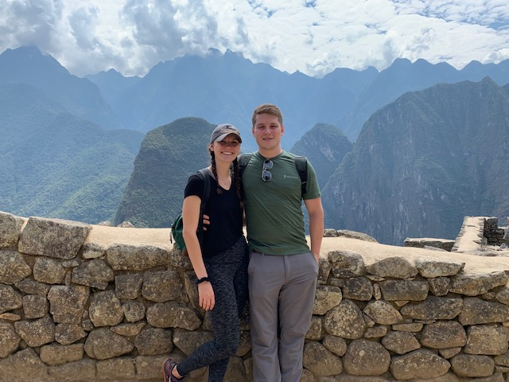
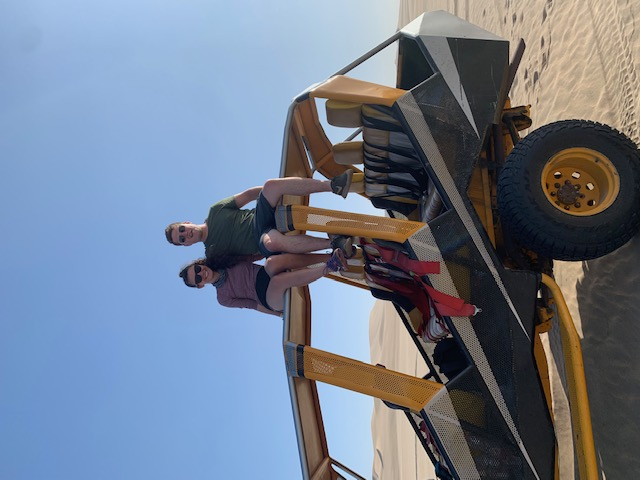
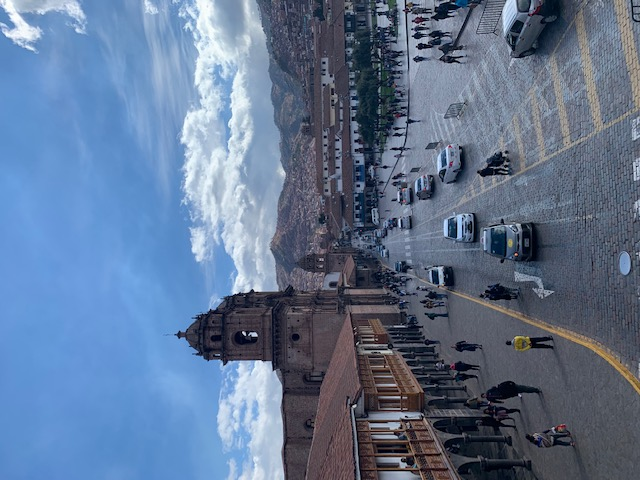

<!DOCTYPE html>
<html>
    <head>
        <title>Lab 2</title>

        <link rel="stylesheet" href="https://unpkg.com/leaflet@1.6.0/dist/leaflet.css"
        integrity="sha512-xwE/Az9zrjBIphAcBb3F6JVqxf46+CDLwfLMHloNu6KEQCAWi6HcDUbeOfBIptF7tcCzusKFjFw2yuvEpDL9wQ=="
        crossorigin=""/>

        <script src="https://unpkg.com/leaflet@1.6.0/dist/leaflet.js"
        integrity="sha512-gZwIG9x3wUXg2hdXF6+rVkLF/0Vi9U8D2Ntg4Ga5I5BZpVkVxlJWbSQtXPSiUTtC0TjtGOmxa1AJPuV0CPthew=="
        crossorigin=""></script>

    </head>

    <body>
        <div id="map" style="height: 500px"></div>

        <script type="text/javascript">

          var map = L.map('map', {
              center: [-13.42, -73.72],
              zoom: 8
          });

          L.tileLayer('http://{s}.tile.openstreetmap.org/{z}/{x}/{y}.png', {
               attribution: '@ <a href="https://www.openstreetmap.org/copyright">OpenStreetMap</a> contributors',
               maxZoom: 10,
               minZoom: 3
            }).addTo(map);

//customizing markers
            var redflagIcon = L.icon({
                iconUrl: 'redflag.png', // url that links to the icon image file
                iconSize:     [38, 38], // size of the icon image in pixels
                iconAnchor:   [10, 20], // the top left corner of the icon will be aligned so that this point is at the marker's geographical location
                popupAnchor:  [0, -10] // point from which the popup should open, relative to the iconAnchor
});

//adding markers
            var marker1 = L.marker([-13.163,-72.545], {icon: redflagIcon}).addTo(map); //Macchu Picchu
            var marker2 = L.marker([-14.087,-75.764], {icon: redflagIcon}).addTo(map); // Huacachina
            var marker3 = L.marker([-13.53,-71.969], {icon: redflagIcon}).addTo(map); // Cuzco

//adding popups
            var pic1 = '';
            var pic2 = '';
            var pic3 = '';

            marker1.bindPopup('<p style="color:darkgrey; font-weight:bold"> Macchu Picchu, Sept 2019 </p>' + pic1);
            marker2.bindPopup('<p style="color:tan; font-weight:bold"> Huacachina, Sept 2019</p>' + pic2);
            marker3.bindPopup('<p style="color:brown; font-weight:bold"> Cuzco, Sept 2019 </p>' + pic3);

        </script>
   </body>
</html>
